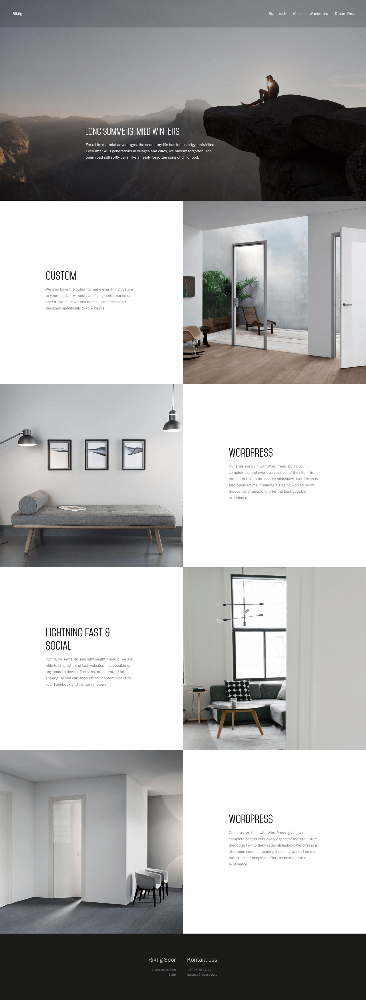
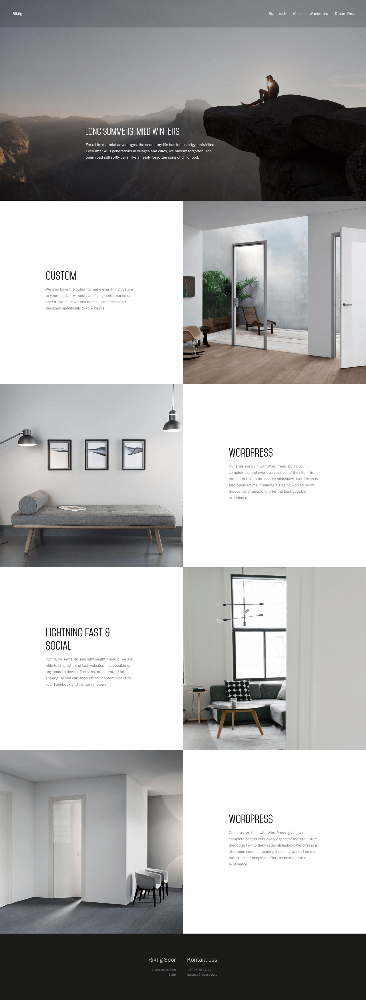

I never have enough time to do everything I want to do throughout the day, and when university and work is battling for my attention, I simply had to put all my other projects on hold.
This is simply a list of projects I have been working on, in no particular order. They may not be as polished or well thought out as everything else, but I have included them anyway in order to highlight their existence. The vast majority of this is unfinished and should be treated as such.
I feel like I should include everything in this portfolio, but these projects weren’t necessarily directly related to my course. Thus, they act as bonus content to the portfolio.
Rejected version of a client website

Personal and minimal “new tab”-page in Chrome, might release it to the public at some point

Secret project

Rejected proposal for a calendar design direction

The above is a web application I developed to randomly select user-submitted challenges for the Blizzard game Hearthstone. The application is available here.
Different thumbnail-approaches for my personal portfolio website.

My personal portfolio (re)launched Jul 15th. Built with Jekyll as performance was my number one priority. Landed me several job offers in Norway and the UK – currently available live here.
 
 The above is a self-developed Wordpress theme in its early stages. It was further developed to serve client websites like Glea and more.

I also have a fair amount of forgotten web designs for my personal portfolio. Some elements made it to this site, but the vast majority is resting in a folder for future inspiration – waiting for the right opportunity.